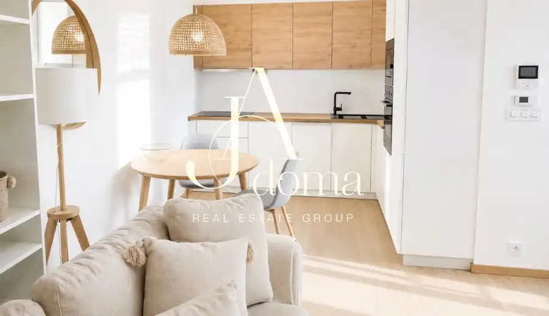
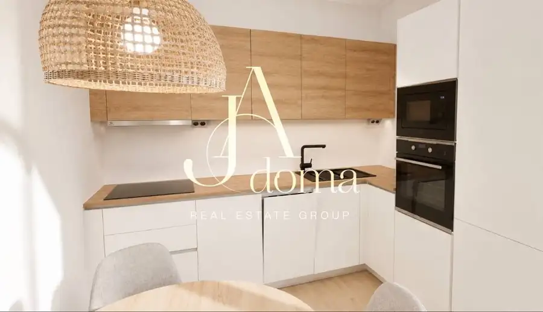
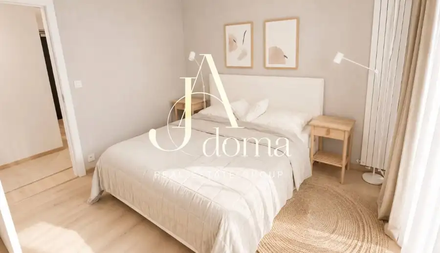
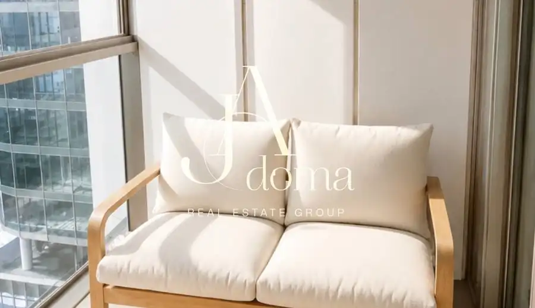

PET-Friendly. Foreign-friendly. Kompletne zariadený 2-izbový byt s pivnicou a garážovým státím v prestížnom projekte Eurovea Tower
Staré Mesto, Bratislava





- Dispozícia2-izbový
- Plocha58 m²
- Poschodie12. z 47
- StavNovostavba
- Energetická triedaA
O nehnuteľnosti
Realitná kancelária JAdoma Vám exkluzívne ponúka na prenájom elegantný, svetlý a kompletne zariadený 2-izbový byt v jednom z najvyhľadávanejších a najprestížnejších rezidenčných projektov Bratislavy – Eurovea Tower.Predstavte si ráno, keď sa byt naplní príjemným prirodzeným svetlom, pripravíte si kávu v modernej kuchyni a deň začínate priamo v srdci bratislavského downtownu. Večer sa vraciate domov popri nábreží Dunaja, reštauráciách a kaviarňach Eurovey a za pár minút ste vo svojom pokojnom a elegantnom interiéri vysoko nad ruchom mesta.Tento byt nie je iba miestom na bývanie. Je určený pre klienta, ktorý oceňuje kvalitu, dizajn, komfort a výnimočnú adresu.Interiér je zariadený v jemných prírodných tónoch, ktoré spolu s drevenými prvkami, množstvom denného svetla a minimalistickým dizajnom vytvárajú príjemnú, harmonickú a nadčasovú atmosféru.Realitná kancelária JAdoma Vám exkluzívne ponúka na prenájom elegantný a kompletne zariadený 2-izbový byt v prestížnom projekte Eurovea Tower, priamo v srdci moderného downtownu Bratislavy.Byt pôsobí veľmi svetlo, vzdušne a harmonicky. Interiér je zariadený v prírodných a neutrálnych tónoch, ktoré spolu s drevenými prvkami vytvárajú príjemnú a nadčasovú atmosféru.Dennú časť tvorí obývacia izba prepojená s kuchyňou a jedálenským priestorom. Kuchynská linka je kompletne vybavená vstavanými spotrebičmi. Samostatná spálňa ponúka manželskú posteľ a dostatok súkromia. Veľkým benefitom je množstvo vstavaných úložných priestorov a lodžia vhodná na oddych.Vybavenie a benefity✓ kompletne zariadený 2-izbový byt✓ moderná kuchyňa so vstavanými spotrebičmi✓ samostatná spálňa✓ veľké vstavané skrine✓ lodžia✓ centrálne chladenie a vykurovanie✓ množstvo denného svetla✓ reprezentatívne spoločné priestory✓ recepcia a bezpečnostná služba✓ pivnica✓ podzemná garáž✓ priame napojenie na Euroveu a nábrežie DunajaEurovea Tower patrí medzi najvyhľadávanejšie adresy Bratislavy. V bezprostrednej blízkosti sa nachádza nábrežie, reštaurácie, kaviarne, obchody, služby, centrum mesta aj moderný downtown.CenaNájomné: 1 450 € / mesiacEnergie a služby: 200 € / mesiacSpolu: 1 650 € / mesiacParkovacie státie: 150 € / mesiac(nie je podmienkou prenájmu)Spolu s parkovaním: 1 800 € / mesiacProvízia realitnej kancelárie: vo výške 1/2 jednomesačného nájomného Provízia realitnej kancelárii zahŕňa kompletný profesionálny servis a bezpečný priebeh prenájmu:✓ obhliadku a komunikáciu s majiteľom✓ prípravu a kontrolu nájomnej dokumentácie✓ asistenciu pri podpise zmluvy a odovzdaní bytu✓ podporu počas procesu nasťahovania✓ asistenciu pri ročnom vyúčtovaní energií a služieb✓ úsporu času, bezpečnosť a profesionálne zastrešenie celého prenájmu – od prvej obhliadky až po protokolárne odovzdanie nehnuteľnosti na konci nájmu✓ bezplatné vyhotovenie dodatku k nájomnej zmluve v prípade pokračovania nájmu na ďalšie obdobie / ďalší rokByt je ideálny pre jednotlivca alebo pár, ktorí hľadajú moderné a reprezentatívne bývanie na jednej z najprestížnejších adries Bratislavy.Inzerát je platný do vymazania.Ing. Mgr. Julia Kysla+421 951 520 028julia@jadoma.skNikita Kyslyi +421 951 520 027 (WhatsApp, Telegram) nikita@jadoma.skIng. Bc. Andrii Kyslyi, RSc.+421 949 418 208andrej@jadoma.skText a fotografie sú autorským dielom a majetkom RK JAdoma – www.jadoma.sk
Parametre
- Cena vrátane energií
- Nie
- Druh
- 2 izbový byt
- Dátum zverejnenia
- 04. 09. 2026
- Energetický certifikát budovy
- A
- Energie
- 200
- Podlažie
- 12
- Počet izieb / miestností
- 2
- Počet lodžií
- 1
- Počet nadzemných podlaží
- 47
- Počet parkovacích miest v garáži
- 1
- Počet spální
- 1
- Rok výstavby
- 2024
- Stav nehnuteľnosti
- Novostavba
- Telekomunikácie
- Optická sieť
- Typ
- Prenájom
- Typ konštrukcie
- Železobetónová
- Vybavenie
- Lodžia, Garážové státie, Recepcia, Strážna služba
- Vykurovanie
- Ústredné, Klimatizacia
- Úžitková plocha
- 58 m²
Kde to je


Mohlo by Vás zaujímať
 BytNové
725 000 €Exkluzívne na predaj - 3-izbový byt v projekte Sky Park v centre Bratislavy
Staré Mesto, Bratislava
3-izbový102 m²6. podlažie
BytNové
725 000 €Exkluzívne na predaj - 3-izbový byt v projekte Sky Park v centre Bratislavy
Staré Mesto, Bratislava
3-izbový102 m²6. podlažie
 BytNové
1 900 €PET-Friendly | Foreign-friendly | Priestranný a svetlý 3-izbový byt v Panorama City na 18. poschodí s výhľadom na Dunaj a panorámu Bratislavy
Staré Mesto, Bratislava
3-izbový90 m²18. podlažie
BytNové
1 900 €PET-Friendly | Foreign-friendly | Priestranný a svetlý 3-izbový byt v Panorama City na 18. poschodí s výhľadom na Dunaj a panorámu Bratislavy
Staré Mesto, Bratislava
3-izbový90 m²18. podlažie
 BytNové
280 000 €Exkluzívne na prendaj - 4-izbový rodinný dom s príjemnou atmosférou v Kráľova pri Senci
Kráľová pri Senci
4-izbový80 m²1. podlažie
BytNové
280 000 €Exkluzívne na prendaj - 4-izbový rodinný dom s príjemnou atmosférou v Kráľova pri Senci
Kráľová pri Senci
4-izbový80 m²1. podlažie